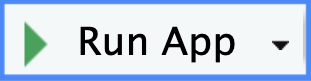
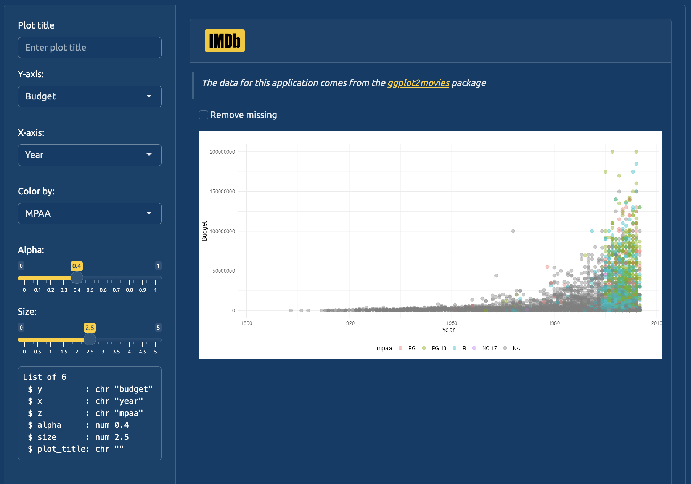
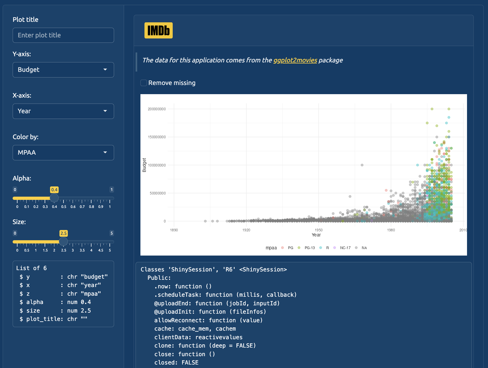

This chapter covers using session$userData in your application to store non-reactive values and objects. Determining whether or not to use session$userData (and what to store in it) will depend on the purpose you want it to serve in your application.
Objects stored in session$userData are not inherently reactive, which makes it ideal for storing persistent values or data that don’t require (or trigger) reactivity. Below is a demonstration of using session$userData to store a non-reactive function to be used in the inst/dev/ application.
20.1.1 Non-reactive objects
Assume I have an object that I want to pass inside the server (and modules), but I don’t need it to update or change. The example I’ll use below is a function (make_dev_ggp2_movies()) that prepares the ggplot2movies::movies for the application:
Create userData$make_dev_ggp2_movies that holds make_dev_ggp2_movies()
2
Create rVals
3
Assign output from mod_var_input_server() to rVals$inputs
4
Updated dev_mod_scatter_server() function
20.1.2.1 Step 1
To view what’s happening with session$userData, we’ll run the application using the Run App button at the top of app.R


(a) Initial app in dev/inst/app.R
Figure 20.1: The reactive values from mod_var_input_server() in the sidebar
We’re using a previous version of mod_var_input_server() that includes a .dev argument, so we know it’s displaying the contents from reactiveValuesToList() in the sidebar.2
20.1.2.2 Step 2
In devServer(), un-comment the renderPrint() call so it renders str(session) and run the app:
# view output in the UI output$vals <-renderPrint({str(session) })
1
Remove comments from renderPrint()

(a) str(session)dev/inst/app.R
Figure 20.2: The str(session) from devServer()
Notice session has :Classes 'ShinySession', 'R6'
20.1.3 What is session?
Each time the app launches, the session list is created and tied to that particular ‘session.’
“An environment for app authors and module/package authors to store whatever session-specific data they want.”Shiny Documentation
session$userData can store objects that should persist across different reactive contexts, but don’t need reactive updating (and won’t trigger reactivity). On the other hand, reactiveValues() creates objects stored in a reactive ‘state’, which will trigger reactive updates in the UI.
We’ll use both reactiveValues() and session$userData in the module below:
20.1.4 Modules
dev_mod_scatter_server() includes arguments for rVals, data_fun, con, and .dev.
rVals is the reactiveValues() object with our input values
data_fun is session$userData$make_dev_ggp2_movies
con is the path or URL to the data_fun in session$userData3
The structure of data_fun will be printed to the UI if the .dev argument is set to TRUE
# view output in the UIoutput$data <-renderPrint({ data_fun})
20.1.4.1 Step 4
Change .dev in dev_mod_scatter_server() to TRUE and run the app:
(a) data_fundev_mod_scatter_server()
Figure 20.3: The data_fun argument from dev_mod_scatter_server() is not reactive
Here we can see data_fun() is not a reactive (it’s a standard function).
20.2 Testing session$userData
Tests are more difficult for modules using session$userData, because these values are created when a Shiny app object is created (and exist inside the reactive context). This point is covered in more detail in this blog post.
“reusing objects passed through session violates module independence – there is code inside the module that uses external objects without stating them explicitly as server arguments.”
20.3 Recap
Recap: reactives
20.3.0.1session$userData
session$userData is best used with values or objects that persist across actions or navigation inside the app (i.e., maintaining values or data across pages of a multi-page app). session$userData can react to changes, but we’d need to explicitly create these reactive expressions or observers.
Learn more about how reactiveValues() works in the reactiveValues() chapter.↩︎
This version of mod_var_input_server() is covered in the reactiveValues() chapter.↩︎
In this case, con is a URL for a .csv version of ggplot2movies::movies)↩︎